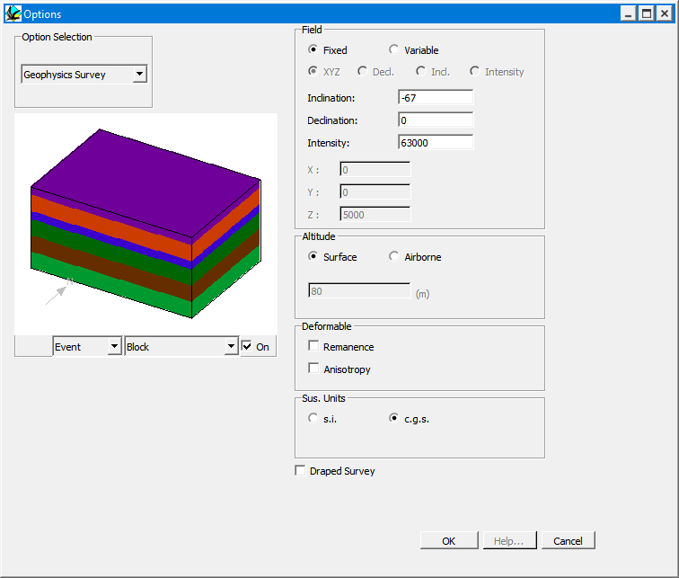

Geophysics survey options
The Geophysics Survey Options Window which can be selected from the Edit menu, allows the user to specify various parameters which alter the survey charactersitics of geophysical calculations.

| Field | Fixed | Earth’s magentic field is uniform over survey area |
| Variable | Earth’s magnetic field (declination and/or inclination and/or strength) varies linearly over survey area | |
| Fixed | Inclination | The inclination of the Earths magnetic field at the location specified by XYZ coordinate in this window |
| Declination | The declination of the Earths magnetic field with respect to the North direction of the model at the location specified by XYZ coordinate in this window. | |
| Intensity | The intensity of the Earths magnetic field at the location specified by XYZ coordinate in this window | |
| X,Y,Z | Location of local origin for variable inclination, declination or intensity | |
| Orient | Orientation of gradient in inclination, declination or intensity | |
| Change | Gradient in inclination, declination or intensity (in units of degrees per km or nT per km as appropriate) | |
| Field | Inclination | The inclination of the Earths magnetic field at the origin of the block. |
| Declination | The declination of the Earths magnetic field with respect to the North direction of the model. | |
| Intensity | The intensity of the Earths magnetic field at the origin of the block | |
| Calculation Altitude | Surface | Geophysical calculations carried out oforn Earth’s surface |
| Airborne/ Altitude | Geophysical calculations carried out for given altitude above EarthÕs surface | |
| Draped Survey | If a topography has been read into the model, a draped survey may be performed at the height specified by the calculation altitude, if this option is not checked, but a topography has been loaded, a barometric survey will be calculated. This option is only available for spectral calculations. You must set the Upper NE corner Z value to the highest elevation of the topography for this option to function correctly! | |
| Deform Fields | Remanence | This option changes the way remanent vectors are treated. If the vectors are deformable, the remanent vector the user provides is the orientation provided when the rock is created, and the final vector orientation depends on the deformation history. If remanent vectors are not deformable, the vector orientation is uniform for a given rock unit regardless of the subsequent. |
| Anisotropy | This option changes the way anisotropic susceptibility is treated. If the anisotropy is deformable, the anisotropic susceptibility the user provides is the orientation provided when the rock is created, and the final orientation depends on the deformation history. If anisotropic susceptibility is not deformable, the orientation is uniform for a given rock unit regardless of the subsequent deformation. | |
| Sus Units | c.g.s. | c.g.s. units used for magnetic susceptibility |
| SI | SI units used for magnetic susceptibility | |
| Draped Survey | Calculates survey at constant hieght above topography (should use Full Spatial calculations to get accurate solution) |
Noddy · open source under the MIT licence · Loop3D/noddy_qt